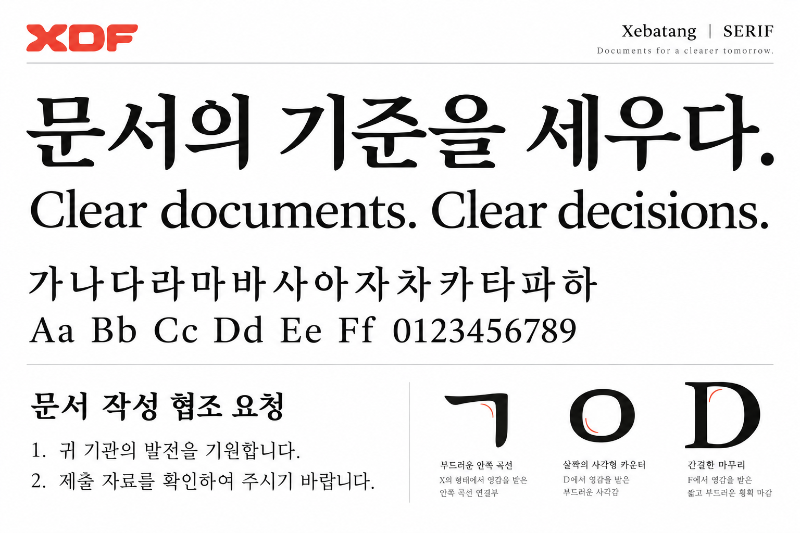
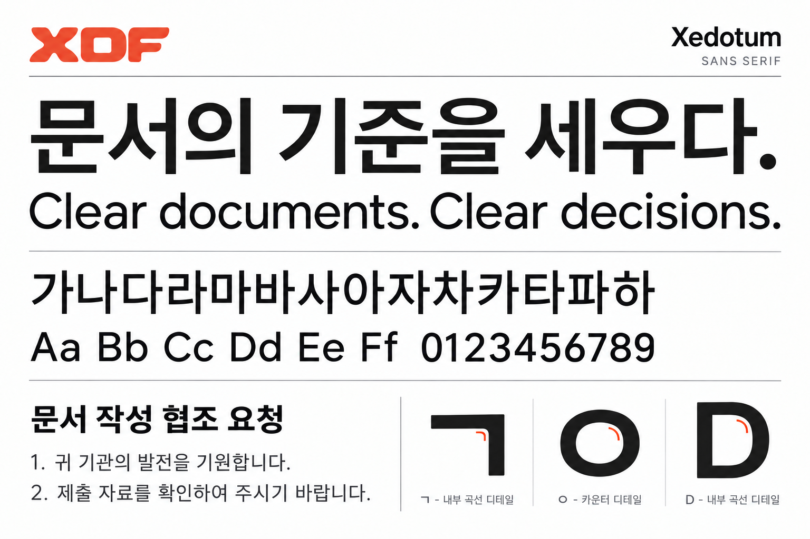

Xebatang
01 / SERIF
명조의 익숙한 구조와 가로·세로 획의 대비.
짧은 세리프와 부드러운 안쪽 연결을 살리는 방향입니다.
공문서에 어울리는 세리프와 산세리프의 형태를 이미지로 먼저 비교합니다.
글자 구조와 읽기 편한 비례를 중심에 두고, 안쪽 접합부와 획 끝에 작은 차이를 남깁니다.

명조의 익숙한 구조와 가로·세로 획의 대비.
짧은 세리프와 부드러운 안쪽 연결을 살리는 방향입니다.

곧은 획과 균형 잡힌 글자 공간.
내부 모서리의 짧은 곡선으로 작은 차이를 주는 방향입니다.
한글 자소의 균형과 영문의 기본 골격을 지켜, 제목과 긴 본문 모두 자연스럽게 읽히도록 합니다.
X의 접합부와 D의 내부 공간에서 가져올 특징은 좁은 영역에 같은 원리로 적용합니다.
획 끝을 짧고 단정하게 정리하고, 세리프와 산세리프의 성격에 맞게 곡률과 대비를 조절합니다.
두 시안은 이미지 생성으로 만든 형태 탐색 자료입니다. 이 글자들이 설치용 폰트에 구현된 것은 아닙니다. 이전 실제 폰트 실험은 0.200 비교 화면에서 별도로 볼 수 있습니다.